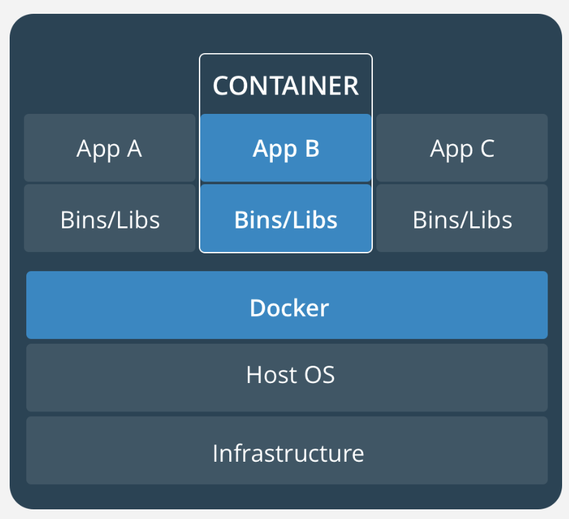
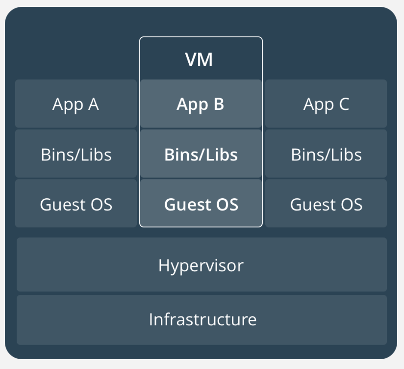

Vamos falar de containers
CAIO TREVISAN
caiotrevisan.com / me@caiotrevisan.com


O que são containers?
Container é um pacote leve, independente e executável de um pedaço de software que inclui tudo que é necessário para rodá-lo, como: código, runtime (sistema operacional), ferramentas/bibliotecas do sistema e configurações.
Ta, mas o que isso significa?
- Compatibilidade (funciona no meu)
- Versionamento (uso de tags)
- CI/CD (versões imutáveis)
- Isolamento / Segurança
Já vi isso antes.. máquina virtual, não?


Container ou Docker?
Docker é somente o nome de uma empresa por tras dos containers. Projeto open-source desde 2013 no mercado com mais de 12
bilhões de pull requests.
Docker também mantém o
DockerHub. Projeto open-source para armazenamento de imagens na nuvem.
Outro exemplo de containers é o rkt (rocket). Também open-source e mantido pelos mesmos criadores do CoreOS com foco maior em segurança.
Como criar uma imagem/container? (Dockerfile)
FROM node:9-alpine
COPY package.json ./
RUN npm i && mkdir /ng-app && cp -R ./node_modules ./ng-app
WORKDIR /ng-app
COPY . .
CMD ["node", "server.js"]
docker build -t [tag-name] -f Dockerfile .
docker run [tag-name]
Prática 1 - Aplicação sem banco de dados
Prática 2 - Aplicação com banco de dados
Prática 3 - Micro serviços
O que vem depois?
- auto-healing
- auto-scalling
- service discovery
- balanceamento de carga
- logs
- monitoramento
Orchestration Tools
- Kubernetes
- Docker Swarm
- Rancher
Referências
- Docker - www.docker.com
- Docker Hub - hub.docker.com
- Caio Trevisan Github - github.com/caiocezart/docker-tutorial
- Will Mendes Github - github.com/willmendesneto/micro-frontend-pages